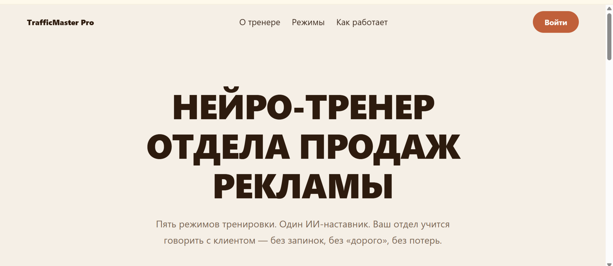
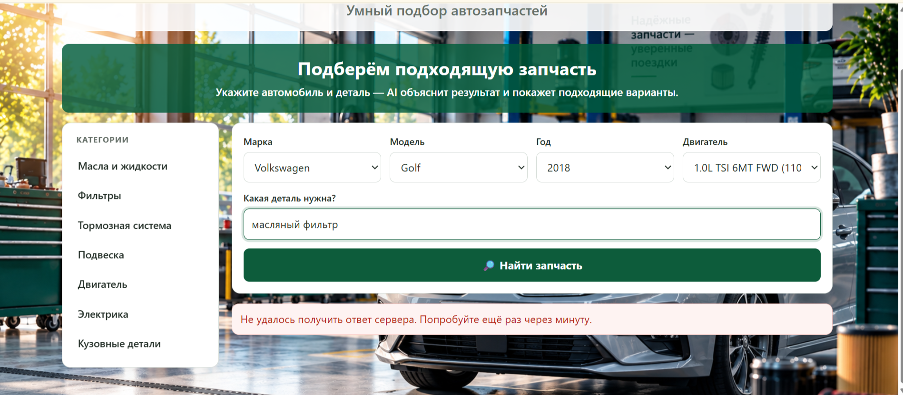
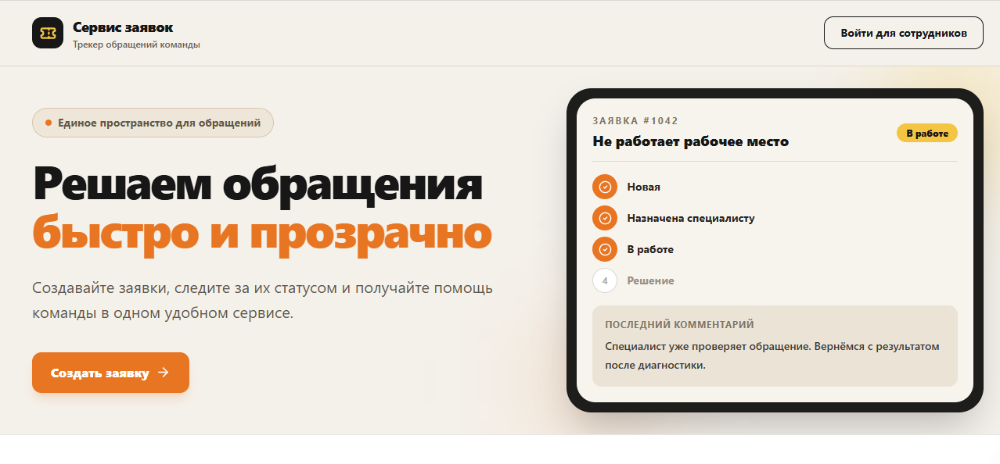
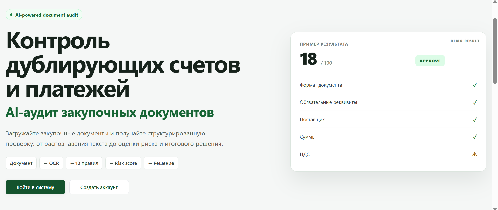

Заявки теряются в чатах и почте
Решение: CRM, service desk, статусы, ответственные и история обращений.
AI · автоматизация · веб-сервисы
Автоматизирую заявки, подбор товаров, обучение сотрудников, проверку документов и работу с данными. Беру на себя полный цикл: от сценария и логики до базы данных, интерфейса, деплоя и запуска.
Стартовая точка
Достаточно показать ручной процесс, таблицу, переписку с заявками или объяснить, что сейчас работает неудобно. Вместе определим первый рабочий сценарий и границы MVP.
Решение: CRM, service desk, статусы, ответственные и история обращений.
Решение: автоматизация, OCR, сверка документов, аналитика и уведомления.
Решение: умный поиск, фильтры, рекомендации, подбор по параметрам и артикулам.
Решение: MVP, первый пользовательский сценарий, база данных, интерфейс и запуск.
Проекты
Не макеты и не портфолио-заглушки. Это рабочие MVP: от AI-тренажёра продаж до контроля платежей, CRM и подбора товаров.
Менеджеры учатся на реальных клиентах, а руководитель тратит часы на разбор звонков и повторное объяснение однотипных ошибок.
Менеджер выбирает сценарий, ведёт диалог с AI-клиентом и получает оценку ответов с рекомендациями.
Более повторяемый процесс обучения команды и меньше ручной нагрузки на руководителя.
Безопасную среду для практики и понятную обратную связь по каждому диалогу.
Рабочий MVP

Покупатель не знает артикул, менеджер тратит время на уточнения, растёт риск ошибок подбора.
Пользователь указывает автомобиль, OEM-номер или артикул и получает подходящие варианты с пояснением.
Ускорение ответов покупателям и меньше ошибок при подборе деталей.
Понятный путь от запроса до подходящей детали с объяснением совместимости.
Демонстрационный сервис

Обращения теряются в чатах и почте, непонятно, кто отвечает и на каком этапе задача.
Сотрудник создаёт заявку, назначается ответственный, видны статусы, история и комментарии.
Обращения не теряются, видна нагрузка на команду, процесс становится прозрачнее.
Ясный статус своей заявки; исполнитель — понятный список задач.
Рабочий прототип

Повторные счета и ошибки в реквизитах выявляются уже после оплаты.
Сервис извлекает данные из счёта или скана, сравнивает реквизиты, суммы и номера, показывает потенциальные дубли.
Первичный контроль операций до оплаты и выделение документов для ручной проверки.
Список подозрительных совпадений с объяснением причины и уровнем риска.
Рабочий MVP

Что могу сделать
Выбираю технологию под задачу: где нужен AI — подключаю AI, где надёжнее правила, формулы или интеграции — не усложняю систему.
AI-консультанты, RAG по документам, классификация обращений, поиск по знаниям и поддержка принятия решений.
Заявки, роли, статусы, личные кабинеты, задачи, уведомления и прозрачный процесс работы команды.
Сбор заявок, уведомления, интеграции с CRM, таблицами и внешними API.
Первый рабочий продукт для проверки идеи: кабинет, каталог, SaaS-сервис, форма заказа или AI-инструмент.
Распознавание сканов, извлечение полей, сверка документов, поиск дублей и подготовка данных для работы.
API, базы данных, Docker, домен, HTTPS, Nginx и развёртывание работающего сервиса.
Как работаю
Сначала разбираюсь, где процесс теряет время и данные. Потом определяю первый рабочий сценарий, собираю продукт итерациями и запускаю его на домене. В результате вы получаете не архив с кодом, а доступный рабочий сервис.
Смотрим текущий процесс, пользователей, данные, ограничения и результат, который должен получиться.
Выбираем первый сценарий, который даст практическую пользу без лишней сложности.
Продумываю данные, интерфейс, роли, бизнес-логику, интеграции и архитектуру.
Показываю промежуточный результат, собираю обратную связь и двигаюсь от сценария к готовому продукту.
Настраиваю домен, HTTPS, Docker, сервер и документацию. При необходимости остаюсь на связи для улучшений.
Технологии
Не выбираю стек ради модного названия. Подбираю инструменты, которые подходят сценарию, данным и дальнейшей поддержке.
Контакты
Опишите задачу своими словами. Помогу определить первый рабочий сценарий и подходящее техническое решение.